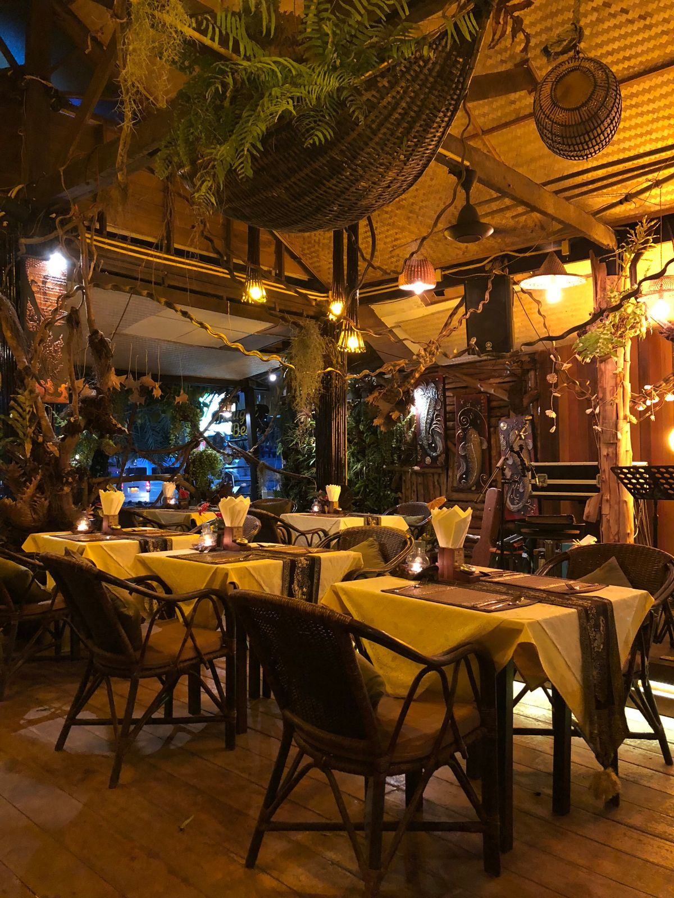
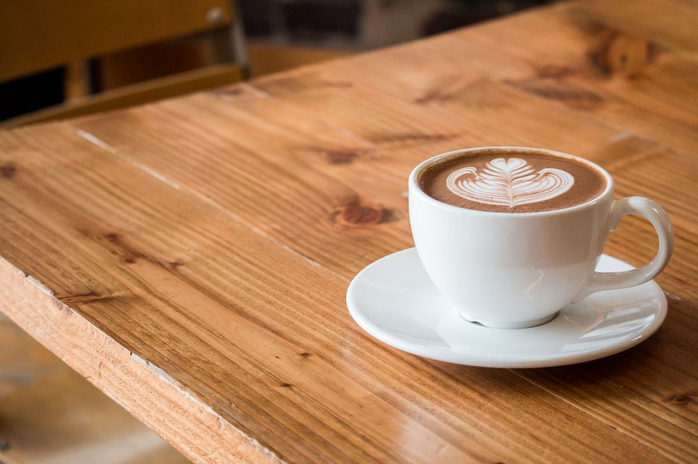

غذای اسپانیایی
غذاهای اسپانیایی ماتادور، امضای رستوران است؛ طعمهایی که در فرمانیه کمتر پیدا میشود.
ماتادور، کافه رستوران اسپانیایی پارک سنتر فرمانیه است — غذای اسپانیایی، دریایی و سوشی در فضایی مدرن، با ایونتها و شبهای دیجی. میزتان را همین حالا آنلاین رزرو کنید.

منوی ماتادور بر آشپزی اسپانیایی و دریایی میچرخد؛ در کنار سوشی و غذاهای بینالمللی، برای هر جمعی انتخاب دارد.

غذاهای اسپانیایی ماتادور، امضای رستوران است؛ طعمهایی که در فرمانیه کمتر پیدا میشود.

غذاهای دریایی تازه، از بخشهای اصلی منوی ماتادور در پارک سنتر.

سوشی و غذاهای بینالمللی، برای جمعهایی با سلیقههای متفاوت.

منوی کافه و دسر ماتادور، در کنار ایونتها و شبهای دیجی رستوران.

ماتادور در طبقه دوم پارک سنتر فرمانیه، با فضایی مدرن و منویی اسپانیایی، برای شامهای خاص و دورهمیهای شیک شمال تهران ساخته شده است.
آشپزی اسپانیایی و دریایی، تخصص اصلی ماتادور است؛ تجربهای متفاوت از رستورانهای همیشگی.
ماتادور میزبان ایونتها و شبهای موسیقی است؛ برای رزرو گروهی از قبل هماهنگ کنید.
در یکی از شناختهشدهترین مجتمعهای فرمانیه؛ دسترسی آسان برای مهمانان شمال تهران.
صفحه اینستاگرام ما @matador.restaurant با بیش از ۱۳ هزار دنبالکننده، ایونتها و منو را بهروز منتشر میکند.
فضای مدرن، نور گرم و سفرهای اسپانیایی در پارک سنتر.




در فرم رزرو، روز و ساعت، تعداد نفرات و فضای موردنظرتان را مشخص کنید.
برای تأیید روز و ساعت رزرو، با شمارهای که ثبت کردهاید تماس میگیریم.
به پارک سنتر فرمانیه بیایید؛ میزتان آماده است.
تهران، فرمانیه، خیابان نارنجستان هفتم، مجتمع پارک سنتر، طبقه دوم، واحد ۲۰۷.
غذای اسپانیایی، دریایی و سوشی، در کنار غذاهای بینالمللی و منوی کافه.
بله؛ ماتادور میزبان ایونت و دورهمی است؛ برای رزرو گروهی با شماره ۰۹۳۷۱۰۱۶۴۹۱ هماهنگ کنید.
ماتادور در مجتمع پارک سنتر فرمانیه قرار دارد و مهمانان میتوانند از امکانات مجتمع استفاده کنند.
فرم رزرو همین صفحه را پر کنید یا با شماره ۰۲۱۴۰۲۲۷۵۱۶ تماس بگیرید.
فرم را پر کنید؛ برای تأیید روز و ساعت رزرو با شما تماس میگیریم. اگر ترجیح میدهید مستقیم صحبت کنیم، تماس بگیرید:
۰۲۱ - ۴۰۲۲۷۵۱۶ اینستاگرام: @matador.restaurant